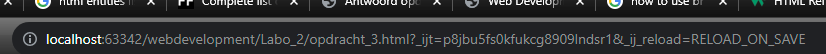

Als men klikt op het html bestand dan wordt het geladen in de brower maar onder het lokale pad.
Sommige functionaliteiten zullen niet werken onder het lokale pad maar wel in een 'localhost'.
Het gebruik van de 'localhost' kan je je webpagina offline bekijken zoals deze online zullen verschijnen.
